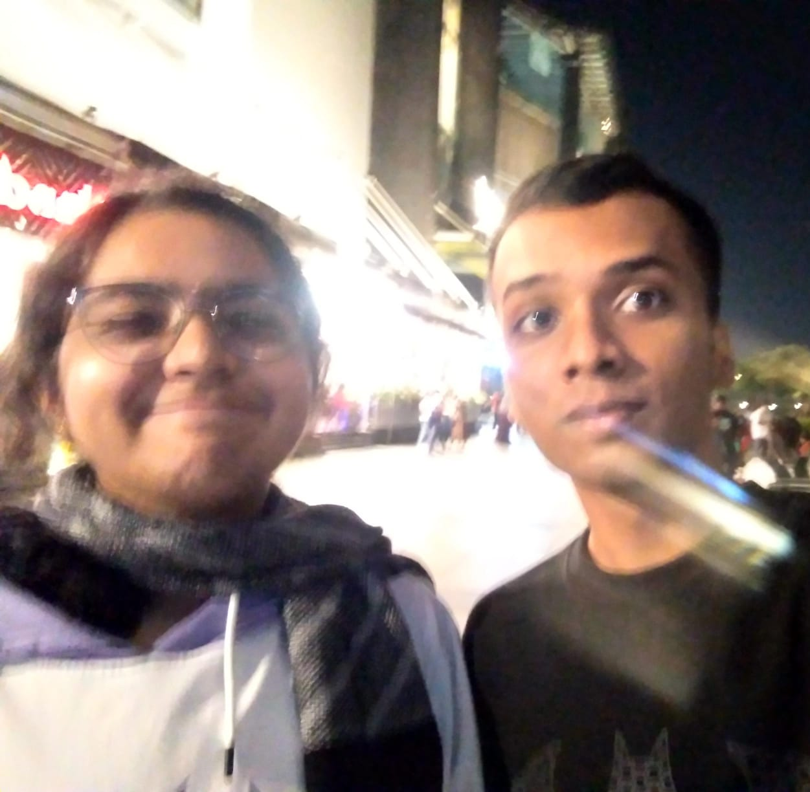

Play one of your fav songs to vibe with while reading all this!
Happy 22nd Birthday, Divya! ğŸ‰
As you step into this new chapter of your life, we all wanted to come together to celebrate you and the amazing person you are!
To mark this special occasion, we’ve gathered heartfelt wishes and messages, in mostly alphabetical order, from those who know know and admire you best and few acquaintances.
Each of us has something unique to say—because you’ve touched our lives in ways big and small.✨✨
So, sit back, relax, and enjoy these warm wishes, May this day bring you as much joy and love as you bring to everyone around you.
Here's to 22 and the many wonderful years ahead!✨✨
Hey my wifee!
I hope you are having the best day. I miss you soooooo much. Damn I have accumulated so many nicknames for you over the years: sneaky, snocky, div, liv, libby etc. You can see my exact thought process as you read through them. And I’m still the smart one of the group (JK, we all know its you).
Damn! You’re 22 now (oooffff.. so old)!. It feels like just yesterday we were in the 11th grade, trying to catch sleep between (during) classes while simultaneously taking notes (god we were nerds). We have been there for each other all these years, never a quiet day in the
Slytherin Commonroom and you are a constant in my life that I know I will never lose. I am so glad that we are a family, I can't imagine my life (or just a day) without you
Your one and only true love (suck it Nandan)
- Anika
Divya, I do not know you as well as I would like to sadly though we spent summer in same lab, but from our limited interaction (and from what loads Nandan has told me about you), you genuinely
seems like an angel embodied, the sweetest, kindest, coolest, funniest, smartest, amazingest person.
I wish YOU the bestest of the best on this auspicious day of your birth and well, pull and meet up more often, exchange lore and lets bully Nandan some!! xD.
- Aploz
Hey Divya,
This is a little something for one of the most sensitive and empathetic souls I know. You're not just fun to be around, but someone who truly understands people at their core. I’ve really cherished every conversation we’ve had, no matter how brief—it’s always been meaningful.
Our shared love for books? Absolutely unmatched. Your passion for what you enjoy, and how expressive you are about it, is something I genuinely admire. Through our talks, I’ve learned a lot about myself too, and I’m incredibly grateful for that.
You have this way of making everyone around you feel comfortable, and I’ve always felt that warmth from you. You're wholesome in the best possible way, and I just want to thank you for being you.
Wishing you the happiest birthday, filled with everything you love. And remember, I’m always by your side—your fellow microexpression noticer (Aru, of course).
All the love~
- Arundati
You are a diligent well mannered student and intern. Happy birthday. All the best for your future.
- Professor Aditya Balasubramanian
Hey Divya!!! HAPPY 22ND BIRTHDAY!!!🥳🥳🥳
I think we first got to know each other through Kavya, but when I really bonded with you was our audio tech course.
I honestly loved working with you(can never forget those late nights) and am glad we passed that course😮‍💨.
And I think I came across your fun side during the AT nite. You are the most kind, hardworking and smart person I have come across.
You also have a butt load of patience which I really admire🙇‍♀🙇‍♀.
A person with such qualities definately has an AMAZING life ahead, be assured. Just remember to stop and have fun sometimes😜.
You have always been there for meğŸ˜ğŸ«‚(hope I can count on you in the future too🥹), and I want you to remember you can always contact me,
for anything and at anytime too(who knows if we'll even end up in the same time zone). I feel extremely lucky to have met you🫂🫂🫂
PS: We need to take more pictures together📷 - Brinda
hey bbg. how's life. I HOPE ITS AMAZING COZ LIKE UR AMAZING. let's go reminisce the past coz why not. I never really spoke to u (that's on me I can't talk to ppl) BUT THANK GOD FOR THE STICKERS ON OUR LAPTOPS 🙌🏼.
We found out abt our love for animes AND THEN CAME THE WEBTOONS. BROTHER. bastard and sweet home took my heart lmao. i loved talking to you abt crazy theories and just admiring the art styles 🥹🥹 and u made me feel so included.
thank you for always being kind and passionate abt the things that u do. u motivate to be a better person I'm not even kidding 😠like how do u have so much patience to write notes and EVEN DISTRIBUTE THEM WITHOUT LOSING UR SHIT.
im losing it just thinking abt it. anyways 🤡. thank you for always helping me with whatever doubts i had and honestly, uve made such a positive impact in my life. i hope to do more for u in the future coz I don't think I've done enough justice to it till now🫠. ok enough with the feelings wala talk.
HAPPY BIRTHDAY DIVYA I HOPE U HAVE A WONDERFUL DAY AND YEAR AHEAD. u truly deserve it. love, carol.
Yoooo wasssupp Divya...
Happy birthday DIVYA VENKAT!!!
You're seriously the best when it comes to recommending movies and series—I’ve watched everything you've suggested, and liked them all!
I still have your Gone Girl book lmaoo, hopefully I'll finish it soon.
Thank you for the laptop stickers you give. No spoilers for OMITB until I catch up!
Stay the same and keep those recommendations coming, have an amazing day! 😊
- Dhanush
Happy birthday Divya !!
I am thankful for all the laughter, heart-to-heart talks, and unforgettable memories that we've shared.
Happy birthday to my friend who’s been my partner of crime in projects and adventures!
From traveling together to working through challenges, every moment has been a special one. I admire your strength and kindness so much.
Wishing you a year filled with joy! You deserve the best!!
- Dhatri
Happy birthday Divyaaa🫶
My rescuer for everytime I’ve bunked, couldn’t have understood anything without your notes.
Also cheers to corner house after capstone celebrations and to all those capstone meetings and standing as a barrier between yogi and me before we rip each other apart,
your energy and patience kept us going, and I’ve always admired how you handled everything with such grace. I’m so grateful for our friendship,
and I wish you nothing but joy and success this year and beyond!✨✨
- Diti
Happy Birthday Divya!
We haven't had much interaction, except having half of our names common.
But I would like to thank you for providing your notes from which literally the whole 2025 ECE batch studied.
We don't know how many student passed, how many students remembered and solved questions just because they went through your notes!
You've contributed a lot to our section and our branch unknowingly and have helped alot of us in many ways.
Having your notes in the drive link I created for our batch was an honour! It'll be maintained like a legacy as it'll be passed on to juniors.
Thank you for making B section proud, and helping everyone unknowingly. Happy Birthday once again :)
- Divyansh
Hey Divyaa! Happy Birthday!!💃🏻🕺🏻💃🏻🕺🏻 ever so grateful for your existence!🙇‍♀
I remember our linear algebra project which is when i first worked with you i think, where you practically carried the whole thing while I... well, I think I was just there for moral support👉🏻👈🏻.
The fashion advice you gave related to anime merch shopping and also stickers, my god! you are god🙏🏻.
From visiting HPE to few tumkas in AT, I will cherish those memories.
And I’ll definitely be praying (and hoping!) that those goddamn kids will finally start listening in your TA classes—seriously, they don’t know how lucky they are to have you!
They will realise soon enough you are The Divya whose notes will be in their survival kit.😗
Hope your day is fun-filled, you deserve it all! 💘
HAPPY BIRTHDAY!!
PS: brinda stole this pic 🙂‍↔
- Erisha
Happy Happy Happy Birthday Divyaaa!!!
I’ve always looked up to you as someone who is so dedicated and patient and sweet and amazing and the most unique incredible person I’ve come across in my life.
Our friendship is a pretty basic one but I consider it more because of the impact you’ve made. I don’t say it lightly when I say Thank you so much for unknowingly making me better.
You are the one person I would wish to have a happy blessed life. From listening to my banter to helping all of us out with our studies, you are irreplaceable.
If there’s anyone I would never forget from my engineering it would be you.
I will forever cherish our memories from the classroom to Aatmatrisha to just randomly chatting during our capstone meets. Cheers to having a happy 21 and many more!! Will miss you a lot after graduation!!
- Geethika
Hi Divya , Wassup how's it going , did you know you were the first friend I made in B section as soon as I got shifted and although you might have thought of me as a nuisance ( which I was sorry and thank you very much) ,
you helped me out and were really patient with me and seriously helped me in the beginning of 3rd sem when no one ( like 0 people were ready to lend me a hand to adjust with ece) that is something that I'm always going to keep in my heart . That kindness of yours , that warmth , I knew you were a gem since day 1 🥰.
Thank you for listening to me non stop and really just being there for me in times when some really never found out if anything was wrong. Thank you for baring with my absurdness and I'm glad you always took the randomly uncomfortable situations I put you in like a SPORT ( YOU DA G)
And at last you probably know that my Gpa would have easily been -2 of what it is if not for your notes. It's a genuine skill you have here . I hope you flourish and grow into your strengths and more .
Love you maxxx , ever so grateful to have met you 💗💗
- Kavya
Happy Birthday, Divya! 🎉 I truly admire you. Your love for books and movies allows you to connect so effortlessly with others.
I remember our quiz together — you amazed me with your incredible fun personality!
Wishing you a fantastic year ahead filled with joy and success.
- Mukesh
In the realm of books where dreams take flight,
A senior named Divya shines so bright.
With pages turned and stories spun,
Her heart is a haven, where magic's begun.
In fantasy worlds, she weaves her art,
Guiding us gently, with wisdom impart.
A mentor, a friend, with laughter and grace,
In every adventure, she finds her place.
With dragons and wizards, she dances through time,
Her spirit a melody, a beautiful rhyme.
In the library’s glow, where the shadows play,
She opens the door to a world far away.
Each birthday we celebrate, a chapter anew,
With wishes like stardust, all sparkling and true.
May your dreams take you higher than mountains so steep,
In the heart of our stories, your legacy we keep.
So here’s to you, Divya, on this special day,
May joy fill your journey in every way.
With books as your compass and friends by your side,
Happy birthday to you- our cherished guide!
As you step into this year with hope in your heart,
Remember the magic that sets you apart.
For in every tale that you lovingly share,
You inspire us all with your kindness and care.
So raise up a toast to the adventures ahead,
With courage and laughter, let nothing be said.
Happy birthday to you- may your spirit soar free!
Forever our favorite senior you'll always be!
- Namita

hbd ig
- Nandan
Hello Club mommy!!
We had talked a few times, and our first encounters were a bit awkward, but I found you a quite intriguing person.
I soon saw that underneath all that cover lied a person who had their priorities straight (at least from outside) and was dedicated to all the things that mattered to them.
I saw how you played by your strengths, with quiet self confidence and 0 cockiness that is indeed so admirable!!
I have also noticed that you have a way of putting people at ease in personal conversations with your non judgemental way of looking at things and that makes you so beautiful.
Hope you have a wonderful year ahead filled with Love, Laughter and Liveliness club mommy!!
Happy birthdayyyyyyyyy
- Rakshith
Heyy Divya,
First of all, a very happy birthday to you and hope you have a great year ahead and all your wishes come true!!🥳🥳
Thank you so much for being the best senior out there, helping me out with the academics, teachers and helping me sort out everything and giving advice on basically anything and everything and being the best club head ofc..how could I forget that!!..... I guess that's it for now. Happy birthday once again!! Keep smiling!😊
From your favourite junior
- Sanjith
Wishing you a very happy birthday Divya!!! You are one of the very few people who accept me in RR campus (was a alien here for sometime 😅).
First time we properly talked was on the day you had helped me with the matlab codes of Mathematics for electronics engineers in 3rd sem. That act of yours made me feel that I am no more an alien here in RR campus.In the upcoming semesters, we collaborated on research projects, where I got to know your skills more.We worked day and night (sometimes burnt the midnight oil) and came with solutions to problems initially thought as impossible.The most profound memory I have is when we working for the hackezee hackathon project and we randomly entered the scooter parking for the license plate recognition where we search for the best license plate and had a lot of fun !!Who can forget your notes, those are the golden contributions to ECE dept!!!
Enjoy your day and keep smiling!!
Yours truly,
MÂ RÂ Shreyaank
HAPPY BIRTHDAY DIVYAAAAAAAAAAA!!!!
I hope you read it like I'm screaming it hehe hehe
We've known each other for quite some time now actually 3rd semester, but got closer from 4th ish or 5th sem and from then on no looking back 🥰
You are one gem of a person, very pure heart â¤
I hope you achieve all your dreams and I also hope for us to continue this friendship 🫂🤗ğŸ°ğŸ›µâ˜•ğŸŒ 💃ğŸ»ğŸª„
Love you too much 😘💋✨
- Sindhu
Happy Birthday aunty!!
22 years, yet so dumb (lizard noises with head shakes).
Have a great year ahead AND COME TO MY COLLEGE BEFORE YOU TURN 23 BISH.
Have loads of fun (not without me). See you soon (?) bye cow
- Tharini
Happy birthday, senior!!!
Have a wonderful time ahead, keep glowing as always!! Wish I’ll meet you soon someday under the glowing sun!!
Thanks a lot for holding on to my hands always, senior, not letting me go!!
I also wish you grow much more stronger this year to bully Nandan and help me out.
Senior, am there to protect you from him, stay strong, and I assure you that I will always be there to protect you from Nandan and also from all the evil!!
Happy birthday again, senior!


 Hbd SNOKYYYYY
Hbd SNOKYYYYY